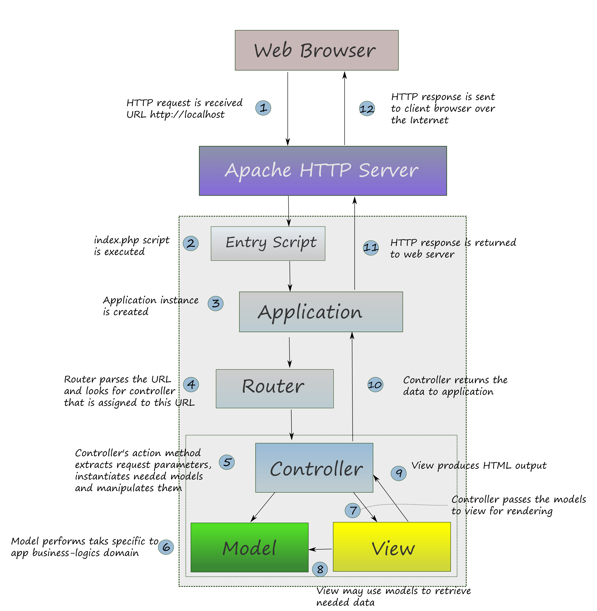

4.2. Separar la Lógica del Negocio de la Presentación
Un sitio web típico tiene tres tipos de funcionalidad: el código que implementa la lógica del negocio, el código que implementa la interación con el usuario y el código que imprime páginas HTML (presentación). Antes de los frameworks de PHP los programadores usualmente mezclaban estos tres tipos de código en un solo gran archivo PHP que lo hace doloroso de probar y mantener, especialmente cuando escribimos un sitio web grande.
Con el tiempo PHP se convirtió en un lenguaje orientado a objeto y ahora podemos organizar el código dentro de clases. El patrón Modelo-Vista-Conatrolador (MVC) es un conjunto consejos que te dicen como organizar el código de una mejor manera para hacerlo fácil de mantener.
En MVC las clases que implementan la lógica del negocio se llaman modelos, los retazos de código (code snippets) HTML se llaman vistas y las clases responsables de interactuar con los usuarios se llaman controladores.
Las vistas se implementan con retazos de código y no como clases. La causa de esto es que las vistas son generalmente muy simples y contienen solo una mezcla de código HTML y código PHP en línea.
El principal objetivo del concepto MVC es separar la lógica de negocio (modelos) de su visualización (vistas). A esto tambíen se llama separación de conceptos, cuando cada capa hace solo su tarea específica.
Al separar nuestro modelo de las vistas reducimos el número de dependencias entre ellos. En consecuencia un cambio hecho en una de las capas tiene un impacto posible muy bajo sobre las otras. Esta separación además mejora la reusabilidad del código. Por ejemplo, podemos crear varias representaciones visuales para los mismos modelos (temas cambiables).
Para entender mejor como funciona esto recordemos que cualquier sitio web solo es un programa PHP que recibe una petición HTTP desde el servidor web y produce una repuesta HTTP. En la Figura 4.2 se muestra como una petición HTTP es procesada por una aplicación MVC y como la respuesta se genera:
 Figura 4.2. Procesamiento de una petición HTTP en una aplicación web MVC
Primero un visitante del sitio web ingresa la URL en su navegador web, por ejemplo http://localhost, y el navegador web envía la petición al servidor web. En el caso de una URL como http://wikipedia.org la petición viaja a través de internet.
El servidor web con el motor de PHP ejecuta el script de entrada index.php. La única cosa que hace el script de entrada es crear una instancia de la clase
Zend\Mvc\Application.La aplicación usa el componente router para asociar la URL y determinar a que controlador pasar la petición. Si coincide una ruta el controlador es instanciado y se llama al método de acción apropiado.
En el método de acción del controlador los parámetro son recuperados de las variables GET y POST. Para procesar los datos entrantes el controlador instancia las clases de modelo apropiadas y llama a sus métodos.
Las clases de modelo usa los algoritmos de la lógica de negocio para procesar los datos de entrada y regresar los datos de salida. Los algoritmos de la lógica de negocios son específicos de nuestra aplicación y típicamente incluye recuperar datos de la base de datos, manejar archivos, interactuar con sistemas externos, etc.
Lo que resulta de llamar a los modelos se pasa al script de vista correspondiente para imprimir la página HTML.
El script de vista usa los datos que provee el modelo para imprimir la página HTML.
El controlador pasa la respuesta HTTP resultante a la aplicación.
El servidor web regresa la pagina web HTML resultante al navegador web del usuario.
El usuario ve la página en el navegador web.
Ahora tenemos una idea de como los modelos, las vistas y los controladores cooperan para generar una salida HTML. En las siguientes secciones los describiremos con más detalle.